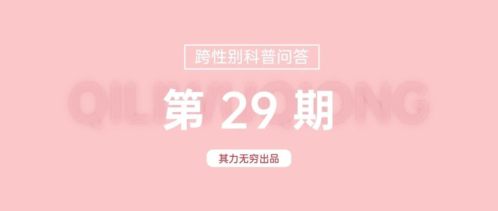

“跨性别者不能低调一点，向顺性别贴近吗？”｜其力无穷跨性别科普第29期
“跨性别者不能低调一点，向顺性别贴近吗？”
关于跨性别，一个常见的误解是其进行性别过渡之目的是为了完全“过关”。
这不仅抹除了非二元性别的存在，也不能充分代表跨性别女性和跨性别男性的全部生命体验。
同时，或许我们可以思考“低调”和“高调”这样的话语如何将跨性别者置于一个进退两难的情境。
从近来的“鉴跨”潮来看，将顺性别视为规范的社会似乎并不愿意接受“隐形跨性别”的存在。
因为只有在跨性别者具有“根本性不同”的时候，“鉴跨”才具有可能性，性别多元的体验才不会“污染”二元性别的“正统”。
强调跨性别的“特殊性”，似乎并不使得顺性别失去其作为身份的普遍性。
或者我们至少可以说，“鉴跨”实际上表达了一种“‘男性’不可能成为‘女性’，反过来‘女性’也不可能成为‘男性’，因此跨性别并不真实”的认识。
然而，如果说“低调”的跨性别者会引起顺性别人群的焦虑，那么指责跨性别者过于“高调”同样是出于一种顺性别才“正常”的态度。
因为这种“高调”让其一举一动既表明“特殊身份”，又指向一种和身份无关、“不必要”的对“存在感”的追求。
但向顺性别贴近的跨性别者并不被允许就这样存在，反而也可能被指控为“别有用心”。
性别是多元的，“顺性别”这个概念本身就很模糊：
在一个特定的文化和社会环境里，谁可以决定什么是贴近顺性别的性别表达？经济条件、能力状况、文化背景……，这些如何被体验为个体的“失败”？
很多性少数群体成员都曾因为体验到自己的不同而感到自我怀疑。
虽然问题不会因此被解决，但做自己仍可以是一种慷慨的行为：让身边的人看到环境中实际存在的相似和不同。
文｜小猪
END